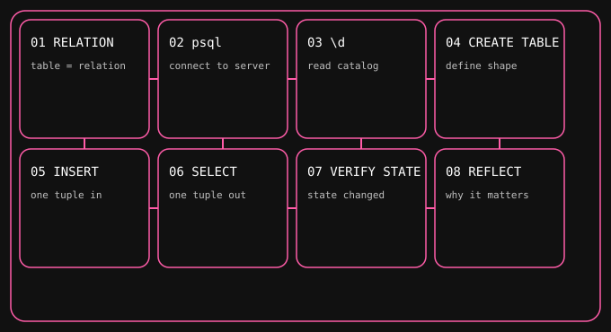
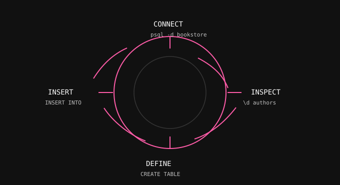
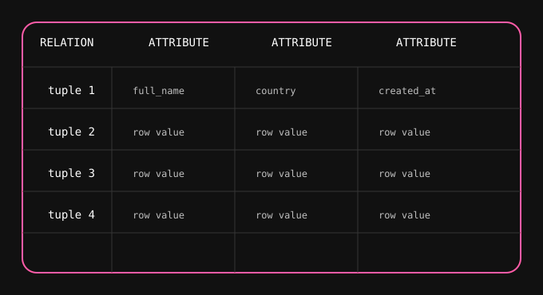
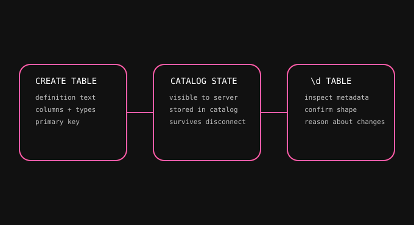
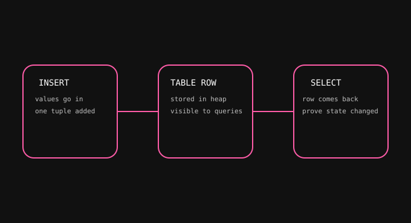

Connecting with psql and creating the first bookstore table.
The lesson starts with relation theory, then moves into psql inspection, then creates the first table, inserts the first row, and verifies the result with SELECT.
Learning Objective
Build the first working mental model of PostgreSQL by connecting with psql, reading catalog output with \d, creating the first bookstore table, inserting one row, and proving the row exists with SELECT.
Prerequisite Concept
What is a relation? A table is a relation made of tuples (rows) and attributes (columns). The point is not the label. The point is that PostgreSQL stores and reasons about structured sets, not spreadsheets.
Pre-Quiz
Score 4/5 or better to unlock the concept section. Once you choose an option, you cannot change it.
Which explanation best matches the word relation?
What does \d help you inspect in psql?
Why should the relation concept come before CREATE TABLE syntax?
Which label describes one complete row?
What should you be able to explain before continuing?
Concept Explanation
psql is the cleanest way to see PostgreSQL as it actually behaves. The prompt is not the database. It is the tool that lets you read catalog state, inspect a table definition, and verify your assumptions.
The order matters: connect, inspect, create, insert, select, then inspect again. That sequence teaches state change, not just syntax.
SVG Concept Maps
Mechanisms first. These diagrams show the flow and the state, not decoration.





Lab
This is a psql-only lab. If the bookstore database does not exist yet, create it first. If it already exists, use it and keep going.
Lab Setup
- Open psql and connect to PostgreSQL 17.
- Create or open the
bookstoredatabase. - Run
\conninfoand\dbefore making changes so you can see what is already there.
Starter SQL
Use this as the first table in the bookstore schema:
CREATE TABLE authors (
author_id integer GENERATED ALWAYS AS IDENTITY PRIMARY KEY,
full_name text NOT NULL,
country text NOT NULL
);INSERT INTO authors (full_name, country)
VALUES ('Ursula K. Le Guin', 'US');SELECT author_id, full_name, country
FROM authors;Step-by-Step
- Connect to the server in psql and switch into
bookstore. - Use
\dto check whether the database already has relations. - Create the
authorstable exactly once. - Insert one author row and predict the result before running it.
- Select the row back out and compare it with the inserted values.
- Use
\d authorsto confirm the catalog now knows the table.
Common Mistakes
- Skipping relation theory and treating the table like a spreadsheet.
- Using the wrong database before checking the current connection.
- Creating the table after trying to insert into it.
- Confusing a row with the table definition.
Expected Files
POSTGRES.mddocker-compose.ymlREADME.mddocs/index.htmldocs/styles.cssdocs/prompts/index.htmldocs/syllabus/index.htmldocs/sessions/session-01/index.htmldocs/session-notes/index.htmldocs/quizzes/index.htmldocs/architecture/index.htmlassets/svg/session-01/*.svg
Commit Message
git commit -m "session-01: relation and first table"Checklist
- I can define relation, tuple, attribute, and row in plain language.
- I can explain why
\dmatters before I create anything. - I can create a table before inserting a row into it.
- I can verify the row with
SELECT.
Post Quiz
Use this after the lab to prove the mental model stuck.
What changes first in Session 01: syntax or model?
What does \d authors prove after table creation?
Why insert after CREATE TABLE instead of before?
Which statement best describes a tuple?
What should the learner be able to reason about after this lesson?
Reflection
- What changed in your mental model after using psql?
- What did \d reveal that a SELECT could not?
- Why does the first table matter for the whole bookstore project?
What Breaks If Removed
Remove the prerequisite concept and the learner cannot tell a relation from a random table. Remove psql inspection and the learner cannot see catalog state. Remove the first table lab and the bookstore project has no concrete starting point.
What Was Learned
Concept: relation theory plus the first psql workflow.
Proof: the learner can create a table, insert a row, and inspect the relation with psql.
Next Session
Finish the post-quiz, then move straight into the next lesson.
When you are done here, open Session 02 and keep the bookstore sequence moving.